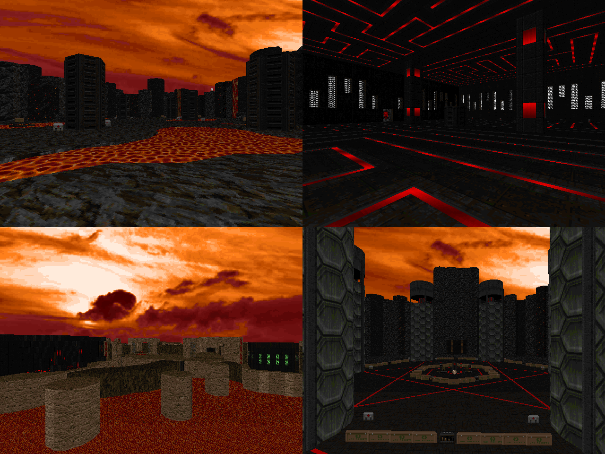

DOWNLOAD LINKS



| Year | 2023 |
| IWAD | Doom II |
| Source port | Boom-compatible |
| Game mode(s) | Single-player |
| Map(s) | MAP01 |
Mourn is a single-level Boom-compatible wad that was born as an attempt to make my first serious large-scale slaughtermap.
Making use of the ever-impressive OTEX, the map takes place in a volcanic mountain area with a handful of abstract tech structures
built in parts of it.
While slaughter gameplay was largely the plan for Mourn, it's still far from constant enemy spam. The combat encounters offer small
amounts of variety, and some also provide some extra spice by way of gameplay gimmicks. Designing the fights for Mourn was a lot of
fun and a learning experience in more ways than one. The adventure is accompanied by a 10-minute prog-inspired MIDI epic, composed by
none other than myself.